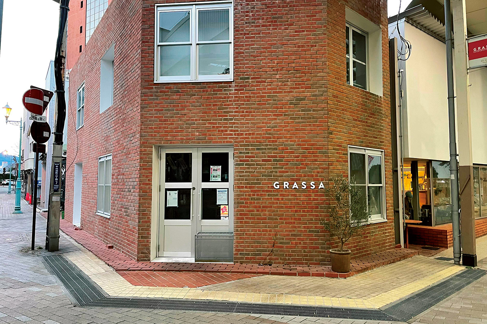
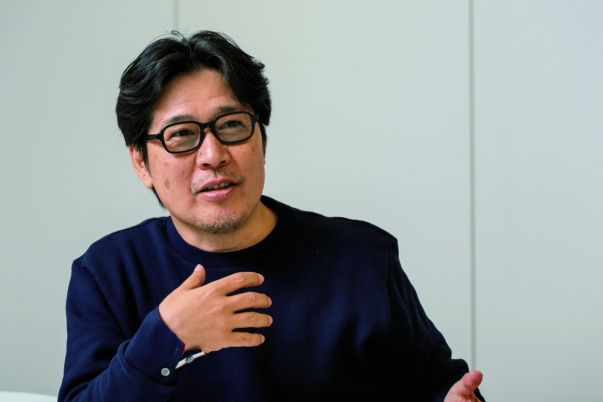
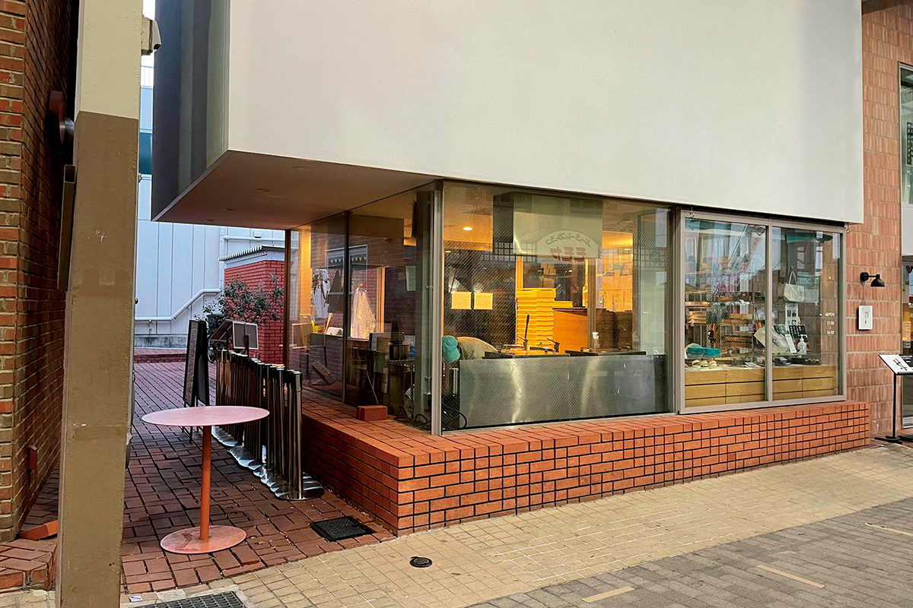
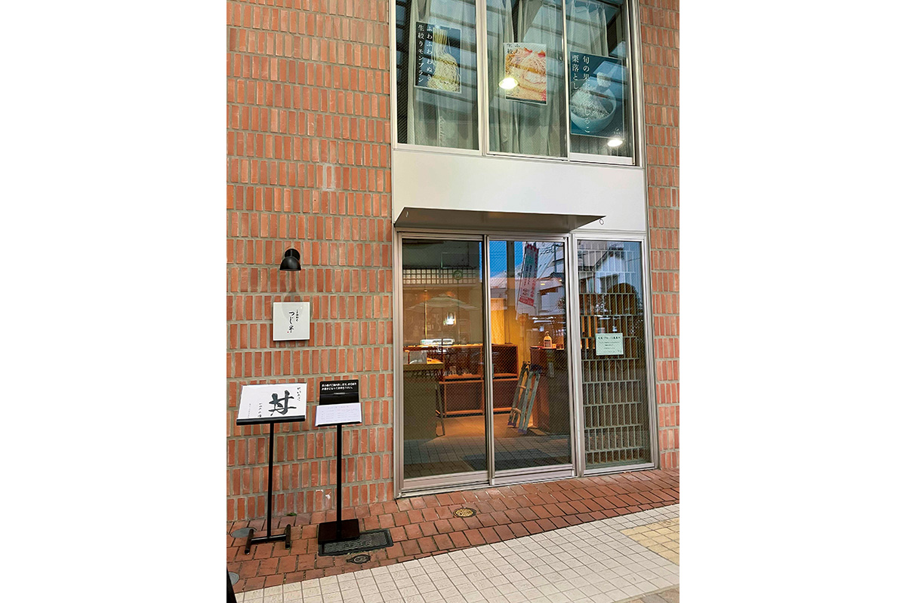
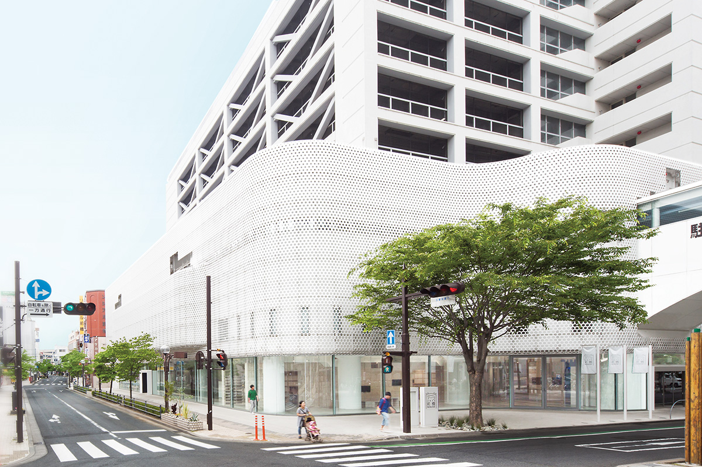

Префектура Гумма · Маэбаси · город и еда
Улица Маэбаси-Тюо: кирпич, вагаси и паста по соседству с Shiroiya Hotel

Центр Маэбаси долго считался примером умирающего города с опущенными ставнями магазинов. С 2014 года здесь возрождали старую гостиницу, которая в 2020 году открылась как арт-отель Shiroiya Hotel, и тем временем на улице Маэбаси-Тюо одна за другой появились лавки и рестораны.
Город
Почему проснулся Маэбаси
Маэбаси, столица префектуры Гумма, когда-то процветал дважды: как почтовая станция на старом тракте Микуни-кайдо и как город шёлка, где работало множество фабрик. К 2010-м годам от этого осталось немного. По словам главы сети магазинов очков JINS, уроженца Маэбаси, центр города был в таком состоянии, что о нём можно было писать в учебниках как о примере «улицы опущенных ставней».

Предприниматель хотел сделать что-то для родного города. В 2013 году он запустил конкурс, который ищет начинающих предпринимателей Гуммы, а на следующий год школу для них. Так он всё чаще бывал в Маэбаси и встречал людей, прежде всего молодых, которые просили спасти старинную гостиницу «Сироия». Из этой просьбы и вырос Shiroiya Hotel. Об отеле, его архитектуре и номерах рассказывает отдельная статья: Shiroiya Hotel.
Готового образца у проекта не было. Сначала вместе с городскими властями составили общее видение: его сформулировала мюнхенская консалтинговая фирма, а копирайтер, тоже уроженец Маэбаси, свёл его к одному японскому слову «мэбуку», «пускать почки». Почки должны были распуститься у людей, у искусства и у самого города. Отель, по замыслу предпринимателя, не обязан окупаться сам по себе: его задача в том, чтобы вернуть жизнь в центр, а лаунж открыт для всех как общая гостиная, где местные встречаются с приезжими, как когда-то на почтовой станции.
«Мне не хочется быть последователем. Каждому городу нужно своё видение: без него не появится никакая стратегия»
глава компании JINS
Общая деталь новых мест на улице Маэбаси-Тюо: кирпич. Им напоминают о шёлковых фабриках, которых в городе когда-то было много, и кирпичные фасады объединяют и отель, и лавки, которые пригласили в центр вслед за ним. Второе условие возрождения, по словам предпринимателя, это люди, готовые начинать своё дело: в те времена и в тех городах, где один за другим появлялись предприниматели, будь то послевоенная Япония или Кремниевая долина, всегда была энергия. Он надеется, что молодёжь Маэбаси увидит, что происходит на улице, и захочет продолжить.
«Это не меняется за один день. Мы смотрим на сто, на двести лет вперёд. Если Маэбаси станет местом, куда едут начинать своё дело, город обязательно оживёт»
глава компании JINS
Сладости
«Накамата»: вагаси по-новому
Лавка японских сладостей «Накамата» открылась на улице в 2018 году. Её главный товар «Фувафува вануки», «пушистый вануки»: необычные дораяки, в которых воздушное тесто соединяется с домашней бобовой пастой и сезонными фруктами. В 2021 году за ними каждый день стояла очередь, а в интернет-магазине их раскупали за несколько минут.

«Накамата», главная лавка в Маэбаси
- Адрес
- префектура Гумма, Маэбаси, Тиёда-мати, 2-7-21
- Телефон
- +81 27-896-9359
- Часы работы
- 11:00–16:00
- Выходные
- понедельник, вторник (бывают и другие)
- Сайт
- nkmt.jp
Морепродукты
«Цудзихан»: рис с рыбой из Нихонбаси
Ресторан «Цудзихан» из токийского квартала Нихонбаси прославился пышными мисками риса с морепродуктами, которые обещают «три вкуса в одной миске». В 2020 году он открыл в Маэбаси своё первое заведение на севере Канто, и в 2021 году очередь к нему выстраивалась даже в будни.

«Цудзихан», ресторан в Маэбаси
- Адрес
- префектура Гумма, Маэбаси, Тиёда-мати, 2-7-20
- Телефон
- +81 27-289-5673
- Часы работы
- 11:00–15:00, 17:00–20:00
- Выходные
- понедельник, второй вторник месяца
Искусство
Arts Maebashi: музей, открытый городу
Городской музей Arts Maebashi открылся в 2013 году, и именно здесь предприниматель встретил молодых жителей, просивших спасти «Сироию». Музей занимается прежде всего современным искусством и устраивает семь или восемь выставок в год. Три слова его программы: творчество, общее дело и диалог.

Arts Maebashi
- Адрес
- префектура Гумма, Маэбаси, Тиёда-мати, 5-1-16
- Телефон
- +81 27-230-1144
- Часы работы
- 10:00–18:00 (вход до 17:30)
- Выходные
- среда
- Сайт
- artsmaebashi.jp
Паста
GRASSA: паста ручной работы из Портленда
Пастерия GRASSA из американского Портленда поддержала идею возрождения центра и в 2018 году открыла в Маэбаси свой первый ресторан в Японии. Пасту здесь делают вручную, а соусы готовят с большим количеством овощей, которые привозят прямо с местных ферм. К 2021 году у ресторана быстро росло число постоянных гостей.
GRASSA
- Адрес
- префектура Гумма, Маэбаси, Тиёда-мати, 2-7-21
- Телефон
- +81 27-289-2771
- Часы работы
- обед 11:30–14:00, ужин 18:00–21:00
- Выходные
- понедельник, иногда вторник
- Сайт
- snoutinc.com
Фото: Кадзуя Хаяси.